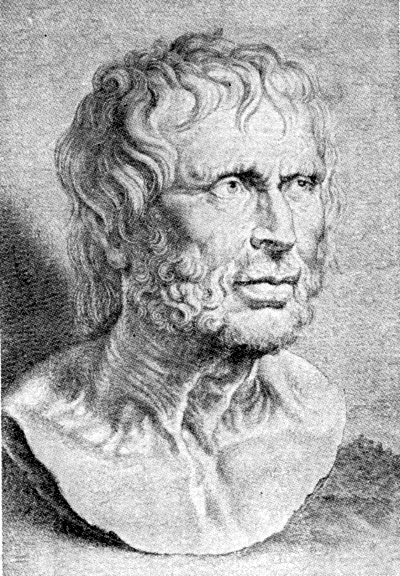

<!DOCTYPE html>
<html>
<head>
    <title>Tribute page for Seneca</title>
    <link rel="stylesheet" type="text/css" href="index.css">
</head>
</html>
<body>
    <div id="mainDiv" class="centralize-h">
        <div id="titleDiv">
            <span>Lucius Annaeus Seneca</span>
        </div>
        <div id="pictureDiv">
            </img>
        </div>
        <div id="quoteDiv">
            <span>We suffer more often in imagination than in reality</span>
        </div>
        <div id="descriptionDiv" class="centralize-h">
            <ul>
                <li>Seneca was born in Cordoba in Hispania</li>
                <li>He was a Roman Stoic philosopher, statesman, dramatist</li>
                <li>He was a tutor and later advisor to emperor Nero</li>
                <li>He was forced to take his own life for alleged complicity in the Pisonian conspiracy to assassinate Nero</li>
                <li>His stoic and calm suicide has become the subject of numerous paintings.</li>
            </ul>
        </div>
        <div id="referenceDiv" class="centralize-h">
            <span>References:</span>
            <span><a href="https://en.wikipedia.org/w/index.php?title=Seneca_the_Younger&oldid=809108796">Wikipedia - Seneca The Younger</a></span>
        </div>
    </div>
</body>
